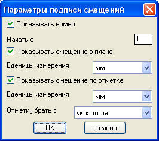
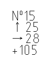

делает необходимые установки и давит OK
делает необходимые установки и давит OKВычисляет смещение от проектного положения
Однажды нужно было мне определить смещение относительно проектного положения полторы сотни свай...
Команда: draw_deflexion_stilt

делает необходимые установки и давит OK
 Укажи главную ось<Enter - горизонтально>:
Укажи главную ось<Enter - горизонтально>:
вводит угол или две точки то оси относительно которой будут проводиться вычисления, пустой ввод предпологает горизонтальное положение оси.
Введи проектную отметку:
вводит проектную отметку озмеряемой точки в метрах
Укажи проектное положение:
указывает проектное положение измеряемой точки
Укажи измеренное расположение:
указывает фактическое положение измеряемой точки
Если в диалоговом окне в графе "Отметку брать с" указать "клавиатуры" появится запрос
Введи измеренную отметку:
вводит фактическую отметку измеряемой точки в метрах
Укажи куда вставить текст:
указывает точку вставки вычисленных смещений
Пример результата работы программы
